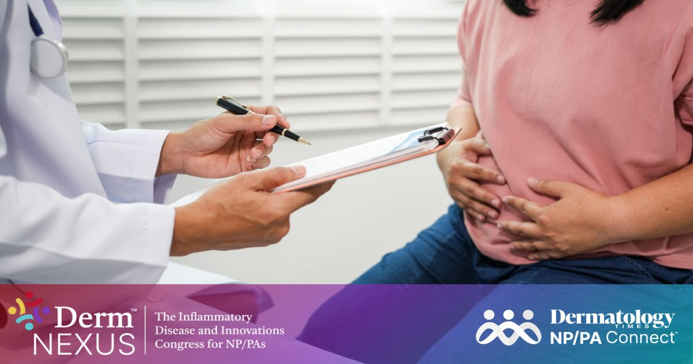

22.11.2026
Кожные признаки могут указывать на скрытые заболевания ЖКТ и печени
На конференции DermNexus 2026 эксперты подчеркнули, что многие кожные изменения появляются раньше официального диагноза заболеваний желудочно‑кишечного тракта, печени или системных воспалительных процессов. Распознавание таких признаков позволяет дерматологам своевременно направить пациента на…